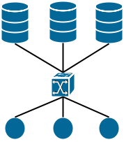
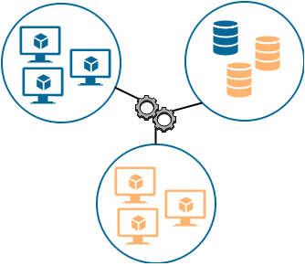

Welcome to the IOStack project!
The main objective is to create IOStack: a Software-defined Storage toolkit for Big Data on top of the OpenStack platform. IOStack will enable efficient execution of virtualized analytics applications over virtualized storage resources thanks to flexible, automated, and low cost data management models based on software-defined storage (SDS).
| Use cases | |
| Administration | |
| Compute layer |
Analytics Applications |
| Analytics-as- a-Service |
|
| Storage layer |
SDS layer |
| Storage system |
|
| IOStack project | Openstack Community | 3rd Party |
In order to achieve this general objective, IOStack also has the following objectives:
|  | Storage and compute disaggregation and virtualization. Virtualizing data analyticis to reduce costs implies disaggregation of existing hardware resources. This requires the creation of a virtual model for compute, storage and networking that allows orchestration tools to manage resources in an efficient manner. For the orchestration layer it is essential to provide policy-based provisioning tools so that the provisioning of virtual components for the analytics platform is made according to the set of QoS policies. |
| SDS Services for Analytics. The objective is to define, design, and build a stack of SDS data service enabling virtualized analytics with improved performance and usability. Among these services we include native object store analytics that will allow running analytics close to the data without taxing initial migration, data reduction services that will be optimized for the special requirements posed by virtualized analytics platforms, and specialized persistent caching mechanisms, advanced prefetching and data placement. | |
|  |
Orchestration and deployment of big data analytics services. The objective is to design and build efficient deployment strategies for virtualized analytic-as-a-service instances (both ephemeral and
permanent). In particular, the focus of this work is on data-intensive scalable computing (DISC) systems such as Apache Hadoop and Apache Spark, which enable users to define both batch and latency-snsitive analytics.
This objective includes the design of scalable algorithms that strive at optimizing a service-wide objective function (e.g., optimize performance, minimize cost, etc...) under heterogeneous workloads. |
Use cases
Idiada: Advanced Data Management
Applus+ Idiada is a global partner to the automotive industry that provides complete solutions for automotive development projects worldwide with design, engineering, testing, and homologation services.
In order to reduce vehicle development time and costs, the automotive industry developed very powerful simulation tools. These tools allow engineers to test vehicle virtually in order to detect possible flaws and introduce improvements.
Vehicle simulation means that a large quantity of data needs to be stored, leading into an excessive consumption of storage space. Varied requeriments on data like expiration times, information shared between business units, ... lead to complex system administration tasks. IOStack is progressing across the distribution of storage between entire infrastructure, allowing for greater scalability and offers the step towards the flexible and low cost data management that the automotive industry needs. IOStack includes the application of multiple techniques and filters to increase the performance, storage and infrastructure such as compression and encryption and leads to greater flexibility and scalability.
Gridpocket: Data reduction for Analytics
Gridpocket is a technology company specialized in the energy efficiency web applications. It is one of the very first companies in the world to provide highly scalable value added service platforms dedicated to smart metering applications. Gridpocket has created an energy service platform to manage energy data. This data comes from sources such smart meters, renewable production meters and other smart grid objects.
When the analysed source data reaches high volume, problems arise: the ingestion phase of the input data typically takes more time than the processing of the query itself. IOStack approach to the Gridpocket problem is through two different and complementary techniques: 1) the Pushdown mechanism: the data cluster implements Pushdown so that the basic filtering of the input data is performed at the data source instead of being done in the compute cluster, 2) the Spark File Filter mechanism: a clever meta-data indexing scheme permits to filter-out non query objects from the onset.
At the data cluster side, the IOStack infrastructure allows the dynamic and simple addition of a filter (either Pushdown or Spark File Filter) in the data path. This results in much less data being sent from the data source towards the compute cluster, that produces a significant acceleration of the overall query processing time.
Arctur: Orchestration and deployment
Arctur has its own HPC infrastructure to be used as the technological foundation for advanced HPC and Cloud Computing solutions and innovative web services in a distributed, high-redundancy environment. One of their most recent activities is to provision analytics applications for their customers and even for their own internal use.
However, deploying and configuring analytics applications is an ardous task, especially for new applications with tailored customer requirements. The work of data centre administrators increases with the number of applications that need to be deployed and their increasingly complex customization.
IOStack toolkit offers Zoe Analytics as a framework for launching complex data analytics applications in a simplified and policy driven manner. It also makes it possible to dynamically manage data analytics applications with advanced scheduling and elasticity strategies. The administrator only needs to provide application descriptors that define how these applications should be deployed. Zoe makes straight-forward to deploy analytics applications in computer clusters and considerably increases management options. With Zoe, Arctur data centre can now provision a variety of analytics applications simply and quickly. Even in the event of new applications is much easier to deploy a cluster with a simple application descriptor in seconds. For Arctur administrators this saves time and reduces costs.